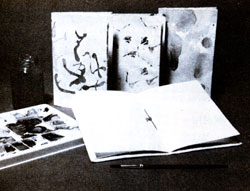
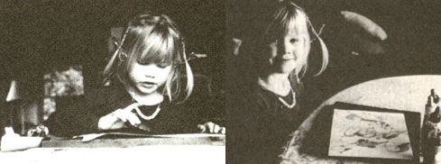
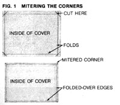
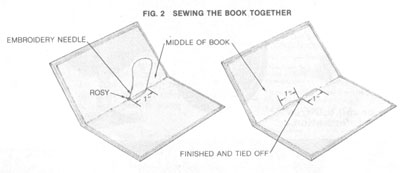

PHOTOS BY JUDE LALLY
Mother feels strongly that youths can be creative "doers," working toward more ecological and self-reliant lifestyles . . . whether their tasks be raising chickens on a farm or maintaining rooftop container gardens in the city. To support the endeavors of our often overlooked "underage" citizens, we're glad to publish well-written articles from younger children and teenagers concerning projects they've undertaken. However, we recommend that all young authors query (that is, send us a letter telling about the story they'd like to do) before writing a full article. Address inquiries to Mother's Children, THE Mother Earth News, P.O. Box 70, Hendersonville, NC 28793.
I'm Brooke and I'm 5. Here's my story.
One day my friend Dawn and I wanted to make books. First, we just stapled pages together. Then I asked my mom to help me think of some other kinds of books to make. She told me about books that are sewn together, ones that have outside and inside covers, Japanese-style books, hardback books, and some others.
I decided to make books that had outside and inside covers and that I could sew together. And I decided to use three different kinds of art for the covers-watercolor, lazy-man tie-dye, and vegetable printing.
Watercolors are special things. You can make hearts or rainbows with them, but I usually just dab the paint in big strokes and let the colors flow on the paper. I like to make pink and purple and to sing "Rainbows, rainbows, all across the sky you flow" when I paint.
I like to watercolor a lot. We soak the watercolor paper for about 20 minutes and then put it on a board. Then I sponge it off with a clean sponge. I used a dirty sponge once. What a mess that made!
My mom mixes about a tablespoon of watercolor paint with a half cup of water in a jar (baby food jars are good). She mixes just the three primary colors-red, yellow, and bluebecause I can make all the other colors from these.
I dip my brush into water first and then into a color and onto the paper. I make sure I wash the brush in the water again before using another color. That way I mix colors on the paper and not in the jars. One time I forgot to dip the brush in the water before using another color and the paints looked like mud.
I try to fill the whole page with color. And I try to feel an idea when I paint, not just show what something looks like. Sometimes my mom and I will talk about the sun and sky, and I try to paint what the sun feels like: how it gets warmer from sunrise to overhead and how it changes at sunset . . . instead of just painting a yellow sun.
[EDITOR'S NOTE: Brooke's mother, Toni told us that this approach to watercoloring comes from the Waldorf philosophy of education and recommended Susan Smith's Echoes of a Dream ($6.95 plus $1.00 shipping and handling from Waldorf School Association of London, 838 Wellington St. North, London, Ont., Canada N6H 3S7) for more information on Waldorf ideas on watercolor and crayon art.]
To do this, I take an eyedropper and dip it in food coloring mixed with water-about six to eight drops of food coloring to one half cup of water-and then paint by squirting the color on the paper. Most times I make sort of Japanese-Chinese calligraphy letters. Sometimes I just color.
It is real important not to move the paper till it's completely dry, because the paint beads up and takes a long time to soak in.
We have a friend at the farmers' market who gives us vegetables that are too ripe to sell, and I use these to print with. I slice a piece of the vegetable off, dip it on an ink pad, and press it down on the paper. Mushrooms, green peppers, cabbage, Brussels sprouts, and celery work best for printing.
I make a book on a wooden board. I take a painted cover and turn its picture face down so that the blank side of the paper is facing me. Then I use a ruler to help me fold each edge in about 1/2 inch. I open the edges back up and use a ruler to draw a diagonal line in each corner where the folds meet (see Fig. 1). I cut this triangle off-this is called mitering the corners. That way when I do the next step of folding the edges back over, the corners will meet, and the cover will have a nice, finished look.
Next I cut a piece of paper to glue over the edges and make an inside cover. I have to cut this inside piece smaller than the outside one so it won't stick out. Then I match up six to eight pieces of 8-1/2" X 11" paper for the pages. I cut these to about 7-1/2" X 10-1/2" so the pages won't stick out of the book, either.
I often need help stacking and cutting the pages, so my mom and I do that together. I make bookmarks that say "Brooke's Books" out of the extra strips of paper.
Then I go back to the outside cover and glue all its edges down. I put lots of glue on top of the edges and in the middle of the paper so the inside cover will stick. I put the inside cover on, making sure it's centered. Then I let the glue dry.
Next I fold the pages in half and put them inside the cover. Then I thread a needle with embroidery thread. I use about ten inches of doubled-over thread. My mom ties a big knot at the back thread ends (she calls this a "rosy"). Then I start at the inside middle point of the book, poke the needle through the papers and covers, and pull tight. I poke the needle back to the inside about an inch above where it came out and pull tight again (see Fig. 2). Then I poke outside through the first needle hole again and bring the needle back in a third hole about an inch below the middle.
My mom helps me tie off the thread around the rosy. We always tie it off twice and leave extra thread before we cut it. One time I didn't leave enough thread, the thread came untied, and my book fell apart!
I use my books a lot. I just made one to put photos in. My mom uses one for her notes on home-schooling. My dad writes down ideas for stories in his, and my one-year-old sister, Rachel Leigh, uses hers to crayon in.
I know you'll want to make your own books, too. You'll need these materials:
[1] Medium to heavy weight watercolor paper, medium weight tie-dye or vegetable printing paper, and light to medium weight inside paper (it's somewhat like typing paper).
[2] Watercolor paints. We use Grumbacher or Winsor & Newton brand.
[3] Food coloring.
[4] Glue. Make sure you use nontoxic glue like Elmer's.
[5] Embroidery yarn.
[6] Embroidery needle.
[7] Scissors.
[8] Ruler.
[9] Vegetables. It doesn't matter if they're old, as long as they hold together.
After I had made a lot of books and given them as presents, my mom and I talked about starting a home business to go along with our home-schooling. So far I have sold 40 or 50 of my books through home-schooling newsletters and children's bookstores. I'd be glad to sell books to any MOTHER readers who want any. I sell them for $1.50 each plus 50 cents more for postage and handling. You can order them from Brooke's Books, 5103 52nd Ave. South, Seattle, WA 98118.
I'm just getting started in the bookmaking business, and I hope to be in it for a long time. Try it yourself. It's fun!
|
|
 |
 |
|
 |
 |
|